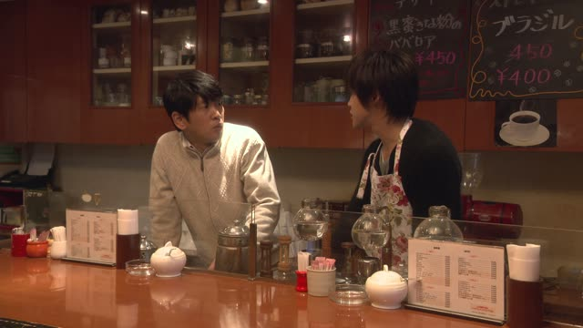
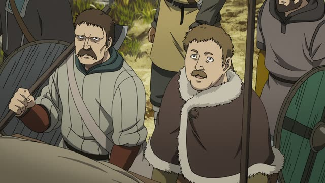
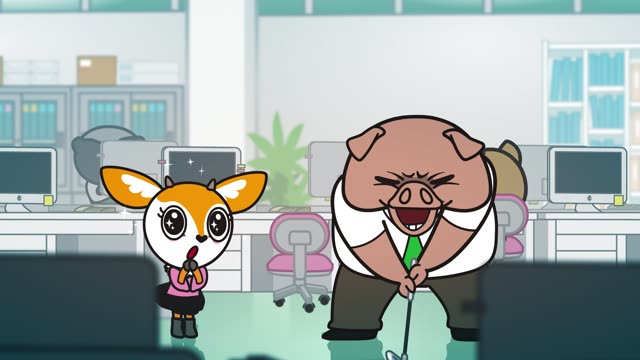
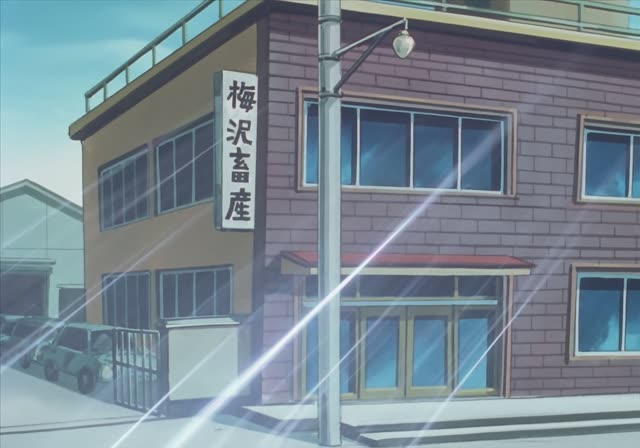
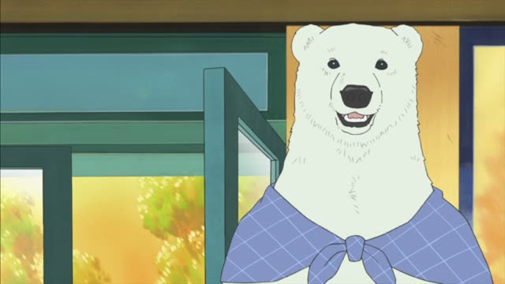

ぜひ

Good Morning Call · Episode 13
ぜひ紹介してください！
"Please, introduce me!"
ぜひ means "by all means, I'd really love to". It makes a request or a wish stronger and shows you mean it. It goes with ～てください, ～たい, ～てほしい or お願いします, not with plain facts.
On this card, she hears about someone she wants to meet and jumps in. ください makes it polite.
On its own, ぜひ! is a full answer: "Yes, I'd love to!" In kanji it's 是非.

Vinland Saga · Episode 12
ぜひ教えてくれ。
"Do tell us." [what's worth more than gold]
On this card, the soldiers really want to know what this man wants more than gold and women. くれ is the rough casual ください.
Quick Examples
A coworker invites you to her concert.
ぜひ行きたいです！
"I'd love to come!"
ぜひ + たい: a strong wish.
PoliteRecommending a ramen place to a friend.
今度、ぜひ行ってみて。
"You really should try it sometime."
CasualYour host family invites you back next summer.
はい、ぜひ！
"Yes, I'd love to!"
ぜひ alone answers an invitation.
PoliteYour neighbor offers to show you her garden.
ぜひ見せてください。
"I'd love to see it."
PoliteWith and without
また来てください。
"Please come again." Polite, maybe just a set phrase.
ぜひまた来てください。
"Please do come again!" You really mean it.
Examples from Media
From Up on Poppy Hill
ぜひ見にいらしてください。
"Please do come and see it."
Umi invites the chairman to see the clubhouse they cleaned. いらして = respectful 来て.

Aggretsuko · Season 1, Episode 1
わあ、ぜひお願いします～。
"Oh, I'd love that!"
Her boss offers to take her golfing.
Kekkon Dekinai Otoko · Episode 10
ぜひあなたにお会いしたいそうですよ。
"He really wants to meet you, I hear."
ぜひ + たい, passed on with そうです (I hear).
Brush Up Life · Episode 9
ぜひ２人で入りたいなと思いまして。
"We'd really like to be on that flight together."
Asking the scheduler to put them on the same flight.
Death Note · Episode 14
はい、ぜひ。
"Yes, I'd love to."
His answer to "let's play tennis again".

Oishinbo · Episode 32
お嬢さんもぜひおいで。
"You must come too, young lady."
おいで = a warm casual "come", said to someone younger.

Shirokuma Cafe · Episode 23
あら、ぜひご一緒したいわ。
"Oh, I'd love to join you."
ご一緒する = humble "go together". わ makes it soft.
Kekkon Dekinai Otoko · Episode 7
ぜひ会わせてほしいな。
"I'd really like to meet him."
About her dad. ぜひ + てほしい: a strong wish.